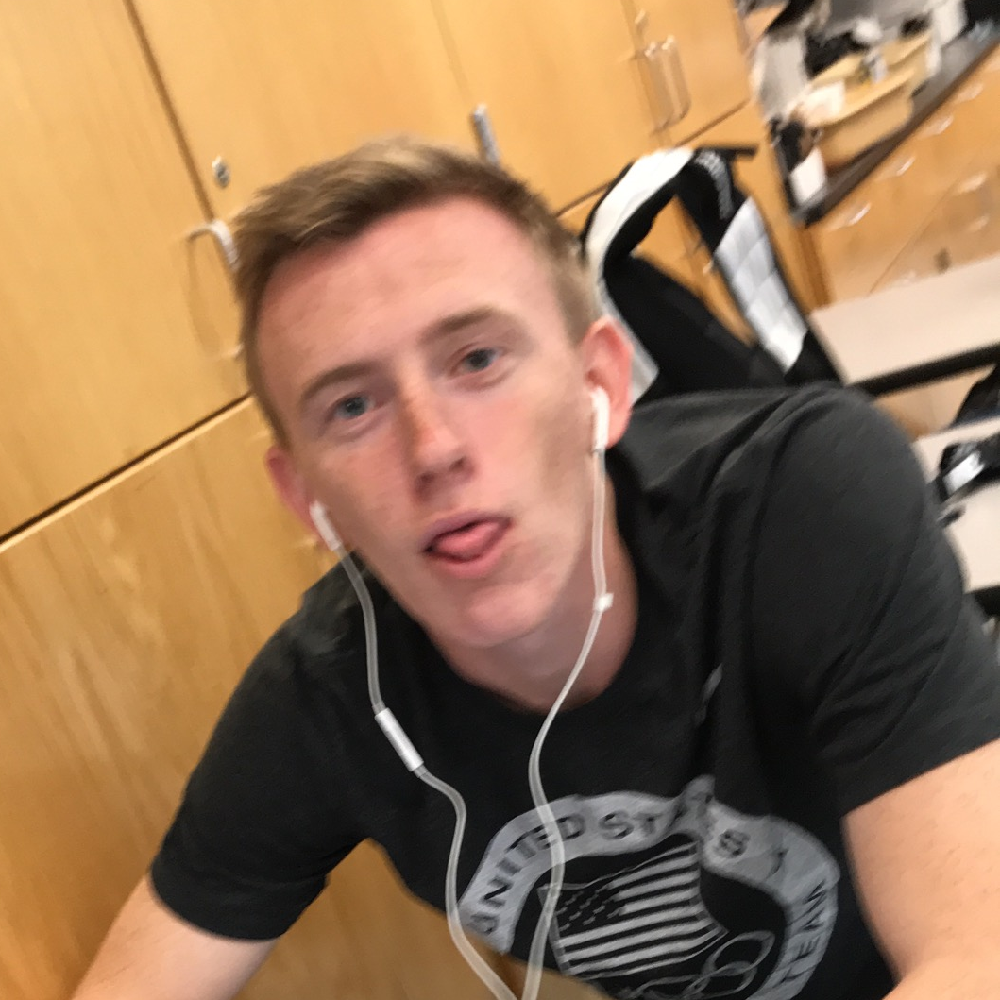
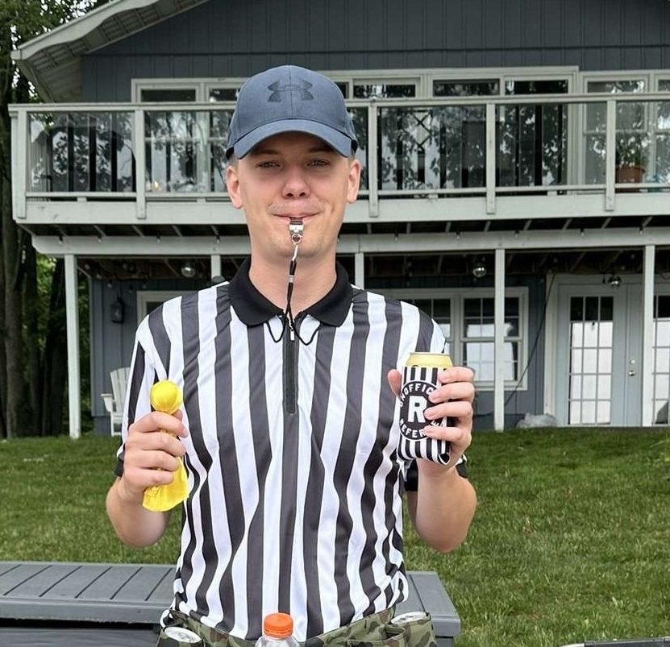
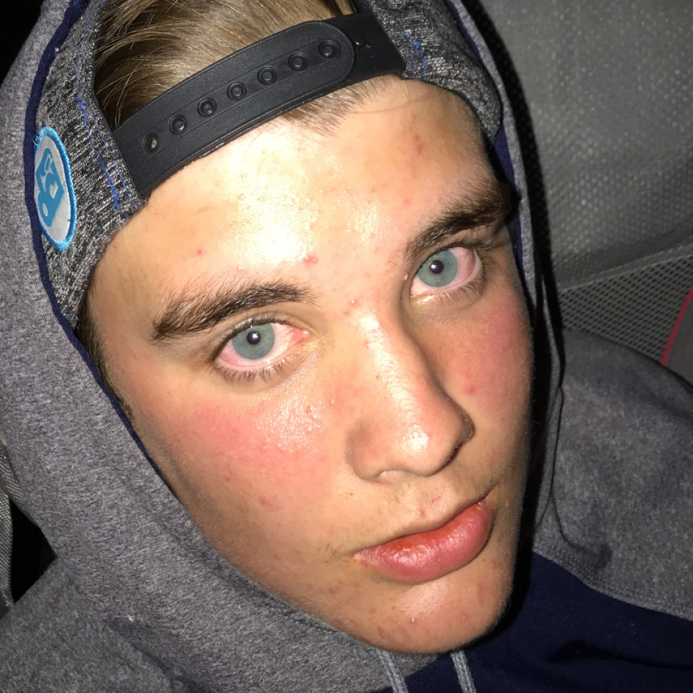
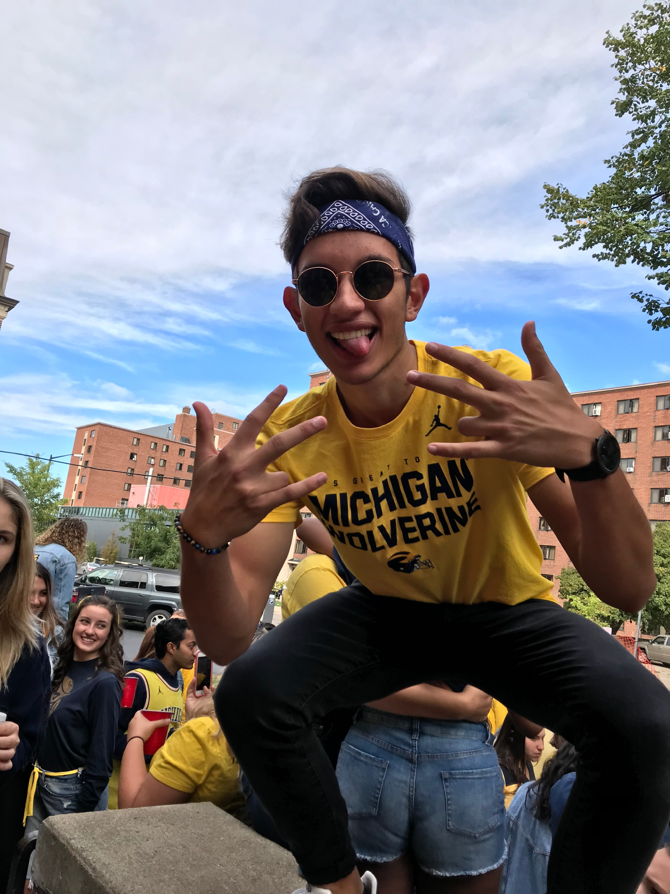

Team of the Week
- Fantasy Points36.70
- Rushing Yards80
- Rushing TDs2
- Receptions10
- Receiving Yards67

Zack Rollis's Zay it with Flowers was the only team in Beefland to clear 170 points, and Kyren Williams was the engine — 16 carries for 80 yards and two fourth-quarter touchdowns (a 4-yard plunge and a 7-yard burst) plus 10 catches for 67 yards, leading the Rams back from a 20-10 deficit to stun Philadelphia 24-20. Nico Collins (32.8) and Zay Flowers (27.8) combined for over 60 points of their own, and Bryce Young chipped in 22.46 through the air, as the 179.76 blew out Brent Hurlburt's Uncle Lamb's 179.76-114.92 — the widest margin of the week by a mile. The Eagles weren't so lucky on the other side of that same Rams win: Saquon Barkley left early with a hamstring injury (full details below in Injury Recap).
The highest score of any team that still lost this week belonged to Adam Schon's Joshin Around, whose 126.22 — led by a jaw-dropping 43.3 from CeeDee Lamb in Dallas's 34-30 shootout win over Houston — wasn't enough to touch Austin Gauss's Puka Bites Back, which rolled to 164.02 behind Kenneth Walker III (32.9) and Puka Nacua (29.7). Making matters worse, Joshin Around got hit by two real-world hamstring injuries in the same week — Terry McLaurin and Saquon Barkley both went down (see Most Wanted and Injury Recap below).
Week 4 Results
Most Wanted
Chug Clause Violators — League Rule, Sec. "Other"



Miracles Come True
Started for Blake Beachnau's Kareem in my Hunt and put together the best game in the league this week — 14 catches for a career-high 192 yards and two touchdowns as Carolina beat Detroit 32-26 on Sunday night. It was exactly the kind of lift Kareem in my Hunt needed in the tightest game of the week, an 18.02-point escape over Love Her Big Judkins.
Beachnau's second miracle of the week came from a different game entirely — Wilson handled a workhorse 21 carries for 81 yards and a score, then added three catches for 39 yards and a second touchdown through the air, as Seattle beat the Chargers 30-23 (and knocked Ladd McConkey out in the process — see Most Wanted). Two separate real-world blowups on the same fantasy roster is how Kareem in my Hunt survives a 135.08-117.06 nail-biter.
Started for Jacob Ayriss's Costa Rico and punched in three rushing touchdowns on 19 carries, adding 5 catches for 21 yards, as Dallas outlasted Houston 34-30 — the same shootout that produced CeeDee Lamb's 43.3-point day for Joshin Around (who still lost, see Team of the Week). Williams's hat trick was the difference-maker in Costa Rico's 116.84-91.28 win over Geezers n' Beaters.
Injury Recap
Saquon Barkley
Barkley left early with a hamstring injury as the Eagles blew a 20-10 fourth-quarter lead and fell to the Rams 24-20. He finished with just 2.0 points, and Philadelphia hasn't yet said whether he'll be limited heading into Week 5.
DJ Moore
Moore left late in the second quarter against New England with a shoulder injury — his second shoulder-related exit this season after Week 2 against Detroit — and was downgraded to doubtful to return. He finished with 2.7 points, and Buffalo lost 29-26 for its first defeat of 2026.
Ladd McConkey
McConkey went down with a foot injury and was listed questionable to return in the Chargers' 23-30 loss to Seattle, finishing scoreless. The Chargers haven't given a timeline yet.
Terry McLaurin
McLaurin was ruled out with a hamstring injury suffered at practice during the week and never took the field as Washington was routed 13-30 by Indianapolis in London. Schon's lineup had him starting anyway, finishing at zero.
Rashee Rice
Rice aggravated his hamstring and was downgraded to doubtful to return against Las Vegas, finishing with zero points. Kansas City survived anyway, 30-27, and the Chiefs will update his status ahead of Week 5.